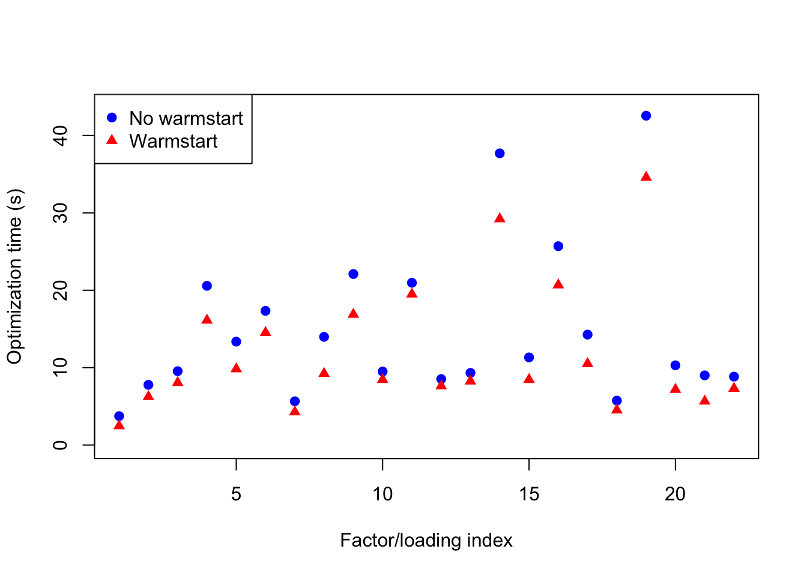
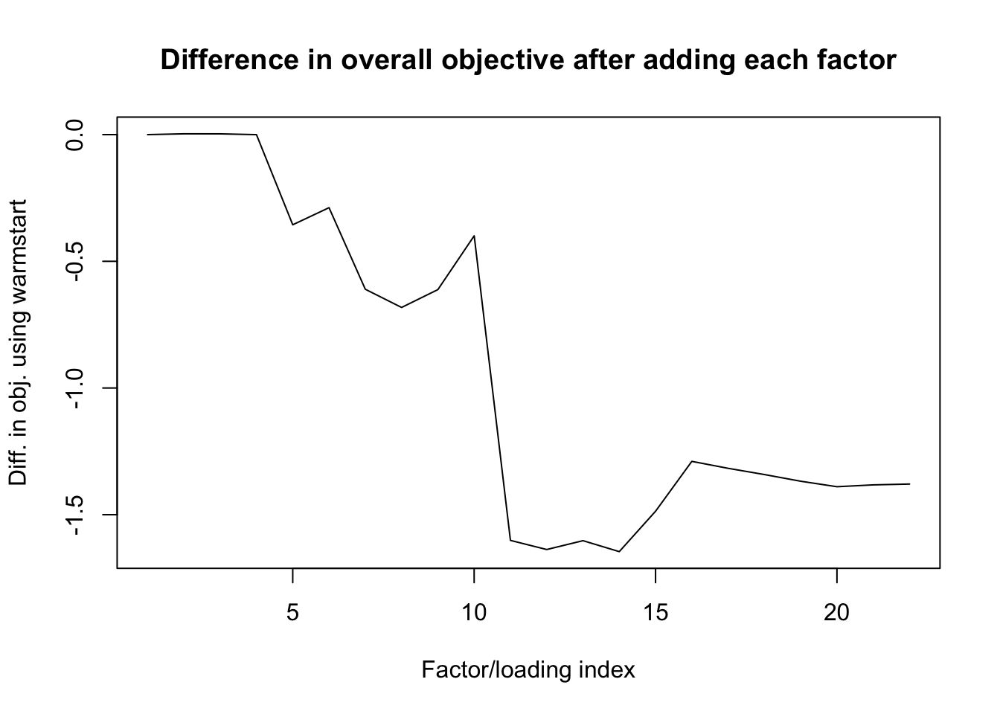

Last updated: 2018-07-26
workflowr checks: (Click a bullet for more information) ✔ R Markdown file: up-to-date
Great! Since the R Markdown file has been committed to the Git repository, you know the exact version of the code that produced these results.
✔ Environment: empty
Great job! The global environment was empty. Objects defined in the global environment can affect the analysis in your R Markdown file in unknown ways. For reproduciblity it’s best to always run the code in an empty environment.
✔ Seed:
set.seed(20180714)
The command set.seed(20180714) was run prior to running the code in the R Markdown file. Setting a seed ensures that any results that rely on randomness, e.g. subsampling or permutations, are reproducible.
✔ Session information: recorded
Great job! Recording the operating system, R version, and package versions is critical for reproducibility.
✔ Repository version: ff417b6
wflow_publish or wflow_git_commit). workflowr only checks the R Markdown file, but you know if there are other scripts or data files that it depends on. Below is the status of the Git repository when the results were generated:
Ignored files:
Ignored: .DS_Store
Ignored: .Rhistory
Ignored: .Rproj.user/
Ignored: docs/.DS_Store
Ignored: docs/figure/.DS_Store
Untracked files:
Untracked: data/greedy19.rds
Untracked: data/warmstart/
Here I turn to the occasional large decreases in the FLASH objective function, an example of which was given in the previous investigation. I trace the problem to the call to optim in ebnm_pn.
I use the same dataset as previously. However, since the example given in the previous investigation is not easily reproducible (due to randomness in udv_si), I re-fit the dataset using udv_svd. A large decrease in the objective function occurs while adding the 23rd factor. The last few lines of verbose output are as follows.
(...)
Objective:-1256928.81965425
Objective:-1256922.94001901
Objective:-1256917.09583091
Objective:-1256911.02417405
Objective:-1256904.83389783
Objective:-1256920.05096899
An iteration decreased the objective. This happens occasionally, perhaps due to numeric reasons. You could ignore this warning, but you might like to check out https://github.com/stephenslab/flashr/issues/26 for more details.performing nullcheck
objective from deleting factor:-1256871.38066608
objective from keeping factor:-1256920.05096899
factor zeroed outThe problem, as I will show, is that optim fails to find a good solution to the EBNM problem.
I backtrack to just before the bad update using parameter stopAtObj (to reproduce this example, make sure to load branch trackObj).
Since the fits take some time, I pre-run the following code and then load the results from file.
# devtools::install_github("stephenslab/flashr", ref="trackObj")
devtools::load_all("/Users/willwerscheid/GitHub/flashr")Loading flashr# devtools::install_github("stephenslab/ebnm")
devtools::load_all("/Users/willwerscheid/GitHub/ebnm")Loading ebnmgtex <- readRDS(gzcon(url("https://github.com/stephenslab/gtexresults/blob/master/data/MatrixEQTLSumStats.Portable.Z.rds?raw=TRUE")))
strong <- t(gtex$strong.z)# This block was run in advance.
res <- flash_add_greedy(strong, Kmax=50, init_fn="udv_svd", verbose=TRUE)
res <- flash_add_greedy(strong, Kmax=22, init_fn="udv_svd", verbose=TRUE)
res <- flash_add_greedy(strong, Kmax=1, f_init=res$f, init_fn="udv_svd",
verbose=TRUE, nullcheck=FALSE, stopAtObj=-1256905)
saveRDS(res, "../data/warmstart/greedy23.rds")I now step through the factor update code.
res <- readRDS("./data/warmstart/greedy23.rds")
fl <- res$f
data <- flash_set_data(strong)
k <- 23
subset <- 1:(flashr:::flash_get_p(fl))
fl <- flash_update_precision(data, fl)
# Get results for factor update:
ebnm_args <- calc_ebnm_f_args(data, fl, k, subset)
a <- do.call("ebnm_pn", list(ebnm_args$x, ebnm_args$s, list()))
# Store results:
fl.before.update <- fl
fl$EF[subset, k] = a$postmean
fl$EF2[subset, k] = a$postmean2
fl$gf[[k]] = a$fitted_g
fl$KL_f[[k]] = a$penloglik - NM_posterior_e_loglik(ebnm_args$x,
ebnm_args$s,
a$postmean,
a$postmean2)
flash_get_objective(data, fl)[1] -1256923So the objective is indeed worse at this point. I inspect the update to \(g_f\):
list(before.update = fl.before.update$gf[[k]],
after.update = fl$gf[[k]])$before.update
$before.update$pi0
[1] 0.914959
$before.update$a
[1] 21625.71
$after.update
$after.update$pi0
[1] 0.3275043
$after.update$a
[1] 167827.8This is a huge change to \(g_f\), much larger than one should reasonably expect from a single update. Indeed, if I initialize ebnm_pn using the current value of gf, I get a much different result.
fl2 <- fl.before.update
a <- do.call("ebnm_pn", list(ebnm_args$x, ebnm_args$s,
list(g=fl2$gf[[k]])))
fl2$EF[subset, k] = a$postmean
fl2$EF2[subset, k] = a$postmean2
fl2$gf[[k]] = a$fitted_g
fl2$KL_f[[k]] = a$penloglik - NM_posterior_e_loglik(ebnm_args$x,
ebnm_args$s,
a$postmean,
a$postmean2)
flash_get_objective(data, fl2)[1] -1256901So the objective improves, as is guaranteed by the theory. The updated value of \(g_f\) is:
fl2$gf[[k]]$pi0
[1] 0.9213986
$a
[1] 19187.07This suggests that decreases in the objective function can be avoided by using warmstarts. I see two possible ways forward: 1. use a warmstart every time (rather than the current default initialization); 2. only use a warmstart if a first attempt at optimization has failed. The first option would be simpler to implement, but could cause FLASH to get stuck in local maxima more easily.
To determine whether it would be viable to use a warmstart every time, I refit the first 22 factors and compare the time required to optimize and the objective attained.
# This block was run in advance.
res.no.warmstart <- flash_add_greedy(strong, Kmax=22, init_fn="udv_svd",
verbose=TRUE)
res.warmstart <- flash_add_greedy(strong, Kmax=22, init_fn="udv_svd",
warmstart=TRUE, verbose=TRUE)
saveRDS(res.no.warmstart, "../data/warmstart/nowarmstart.rds")
saveRDS(res.warmstart, "../data/warmstart/warmstart.rds")res.no.warmstart <- readRDS("./data/warmstart/nowarmstart.rds")
res.warmstart <- readRDS("./data/warmstart/warmstart.rds")The total time (in seconds) needed to optimize factors is:
x1 <- unlist(res.no.warmstart$opt_time)
x2 <- unlist(res.warmstart$opt_time)
list(no.warmstart = sum(x1), warmstart = sum(x2))$no.warmstart
[1] 327.7671
$warmstart
[1] 259.5182The time required per factor/loading is as follows.
plot(x1, ylim=c(0, max(x1) + 1), pch=19, col="blue",
xlab="Factor/loading index", ylab="Optimization time (s)")
points(x2, pch=17, col="red")
legend("topleft", c("No warmstart", "Warmstart"),
pch=c(19, 17), col=c("blue", "red"))
| Version | Author | Date |
|---|---|---|
| 6c545e3 | Jason Willwerscheid | 2018-07-26 |
So using a warmstart yields a small (but reliable) speed-up.
Using a warmstart yields a slightly worse overall objective.
list(no.warmstart = flash_get_objective(data, res.no.warmstart$f),
warmstart = flash_get_objective(data, res.warmstart$f))$no.warmstart
[1] -1256871
$warmstart
[1] -1256873The 11th factor is the culprit:
o1 <- sapply(res.no.warmstart$obj,
function(obj) {max(unlist(obj))})
o2 <- sapply(res.warmstart$obj,
function(obj) {max(unlist(obj))})
plot(o2 - o1, type='l',
xlab="Factor/loading index",
ylab="Diff. in obj. using warmstart",
main="Difference in overall objective after adding each factor")
| Version | Author | Date |
|---|---|---|
| 6c545e3 | Jason Willwerscheid | 2018-07-26 |
Using warmstarts prevents the large decreases in the objective function that I have described here and previously. Using a warmstart for all iterations yields a small speed-up, but can give slightly worse results (as measured by the objective function). However, using a warmstart only when the default initialization fails would be complicated to implement. For this reason, I recommend that we use a warmstart for all iterations.
Out of curiosity, I continued running flash_add_greedy using warmstarts to see how many factor/loading pairs it ended up adding. 25 factor/loading pairs were included in the final FLASH fit, which attained an objective of -1255910.7. This is an improvement of 3 factor/loading pairs and 994 log likelihood units over the inital (problematic) fit obtained without using any warmstarts. To verify these results, run the following:
res.final <- flash_add_greedy(strong, Kmax=50, init_fn="udv_svd",
warmstart=TRUE, verbose=TRUE)
flash_get_nfactors(res.final$f)
flash_get_objective(data, res.final$f) - flash_get_objective(data, res$f)sessionInfo()R version 3.4.3 (2017-11-30)
Platform: x86_64-apple-darwin15.6.0 (64-bit)
Running under: macOS High Sierra 10.13.6
Matrix products: default
BLAS: /Library/Frameworks/R.framework/Versions/3.4/Resources/lib/libRblas.0.dylib
LAPACK: /Library/Frameworks/R.framework/Versions/3.4/Resources/lib/libRlapack.dylib
locale:
[1] en_US.UTF-8/en_US.UTF-8/en_US.UTF-8/C/en_US.UTF-8/en_US.UTF-8
attached base packages:
[1] stats graphics grDevices utils datasets methods base
other attached packages:
[1] ebnm_0.1-13 flashr_0.5-12
loaded via a namespace (and not attached):
[1] Rcpp_0.12.17 pillar_1.2.1 plyr_1.8.4
[4] compiler_3.4.3 git2r_0.21.0 workflowr_1.0.1
[7] R.methodsS3_1.7.1 R.utils_2.6.0 iterators_1.0.9
[10] tools_3.4.3 testthat_2.0.0 digest_0.6.15
[13] tibble_1.4.2 evaluate_0.10.1 memoise_1.1.0
[16] gtable_0.2.0 lattice_0.20-35 rlang_0.2.0
[19] Matrix_1.2-12 foreach_1.4.4 commonmark_1.4
[22] yaml_2.1.17 parallel_3.4.3 withr_2.1.1.9000
[25] stringr_1.3.0 roxygen2_6.0.1.9000 xml2_1.2.0
[28] knitr_1.20 devtools_1.13.4 rprojroot_1.3-2
[31] grid_3.4.3 R6_2.2.2 rmarkdown_1.8
[34] ggplot2_2.2.1 ashr_2.2-10 magrittr_1.5
[37] whisker_0.3-2 backports_1.1.2 scales_0.5.0
[40] codetools_0.2-15 htmltools_0.3.6 MASS_7.3-48
[43] assertthat_0.2.0 softImpute_1.4 colorspace_1.3-2
[46] stringi_1.1.6 lazyeval_0.2.1 munsell_0.4.3
[49] doParallel_1.0.11 pscl_1.5.2 truncnorm_1.0-8
[52] SQUAREM_2017.10-1 R.oo_1.21.0 This reproducible R Markdown analysis was created with workflowr 1.0.1